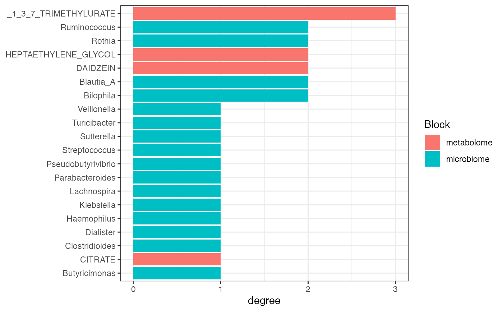

Plot Network Centrality
Source:R/analysis_result_visualization_extended.R
plot_network_centrality.RdVisualize node centrality scores from a correlation network.
Usage
plot_network_centrality(
object,
metric = c("degree", "betweenness", "closeness"),
top_n = 20
)Examples
data("demo_crossomics", package = "microbiomedataset")
correlation <- calculate_correlation(
microbiome_data = demo_crossomics$microbiome_data,
metabolome_data = demo_crossomics$metabolome_data,
sample_link = demo_crossomics$sample_link,
microbiome_rank = "Genus",
metabolome_transform = "none"
)
network <- build_correlation_network(
correlation,
min_abs_correlation = 0.2,
max_q_value = 1,
top_n = 20
)
plot_network_centrality(network)
